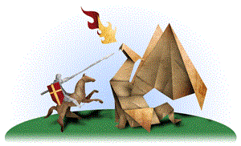
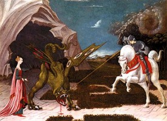
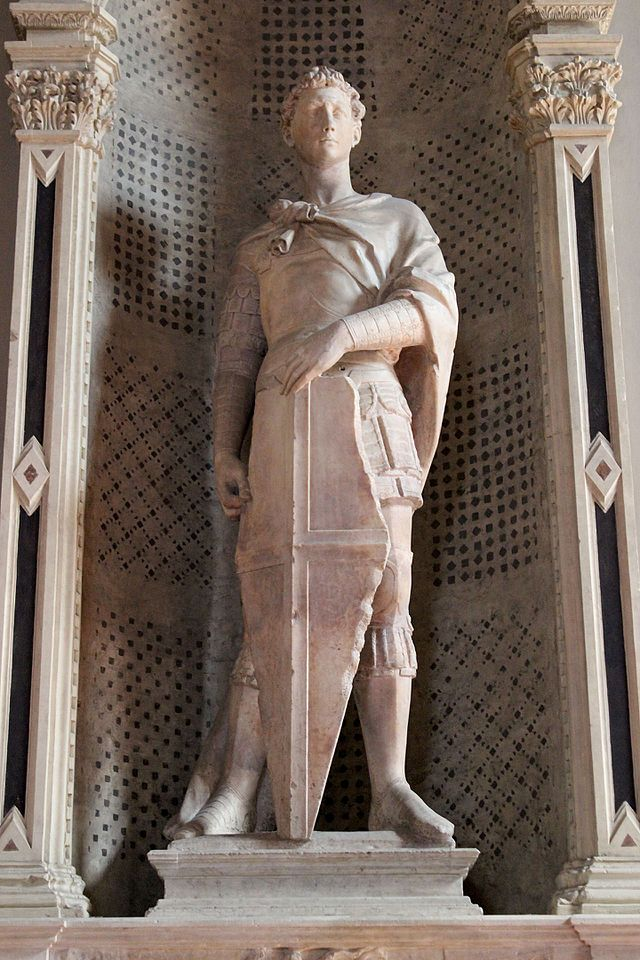

<div class="container-fluid">
    <div class="row">

        <div class="card text-bg-light">
            <div class="card-body">
                <h1 class="titCard">San Jorge</h1>
                <h3 class="titCard">Patrón de los scouts</h3>
                <h4 class="col-lg-12 col-md-12 col-sm-12">
                    <div class="row">
                        <p class="textoP col-lg-8 col-md-8 col-sm-8">Baden Powell escogió en San Jorge como el santo
                            patrón de los scouts. Esta elección tinguè dos motivos. En primer lugar, San Jorge es el
                            patrón
                            de Inglaterra, el país de Baden Powell. Pero principalmente B.P. eligió en San Jorge porque
                            era un caballero andante, y son muchas las veces que B.P. compara a un scout con un
                            caballero. Por qué? Según Baden Powell la Ley Scout es muy parecida a los códigos de honor
                            de los
                            caballeros andantes. Un caballero, así como un boy scout, es leal, es generoso, es valiente
                            y
                            cumple con aquello que promete. Precisamente Jordi fue un héroe para actuar con valentía
                            ante el peligro. Estate muy atento, que te vayamos a explicar la historia de San Jorge y el
                            dragón.
                        </p>
                        
                    </div>
                </h4>

                <h1 class="titCard">La leyenda de San Jorge</h1>
                <h4 class="col-lg-12 col-md-12 col-sm-12">
                    <div class="row">
                        <p class="textoP col-lg-8 col-md-8 col-sm-8">
                            Hay muchas y diferentes versiones de la leyenda. Algunos la sitúan en el Líbano, otros
                            hablan de Dalmacia, y otras veces la leyenda pasa en la ciudad de Silebe (Libia). Llegó un
                            día en la ciudad un enorme dragón, increíblemente feroz y muy fuerte y rápido. Lo único tan
                            grande como su tamaño era su hambre. El dragón destrozaba los cultivos y contaminaba
                            las aguas del mar y todo aquello que estuviera a su alrededor.
                        </p>
                        
                        <p class="textoP col-lg-12 col-md-12 col-sm-12">
                            Cundió el temor entre los pobladoras de toda la región, muy afligidos todos a causa de este
                            monstruo. Se cuenta que algunos propusiero unirse todos para hacer frente al dragón y tratar
                            de derrotarlo. Pero todo resulto infructuoso, púas cada vez que aparecía lo dragón cundía un
                            pánico generalizado y como resultado los habitantes huían despavoridos, olvidándose de hacer
                            frente al monstruo. No obstante algunos pobladoras llamaron a sus vecinos y entre todos
                            resolvieron que para evitar que el dragón atacara la ciudad le ofrecerían dos ovejas
                            diariamente como alimento para apaciguar su apetito. Se extendió el miedo entre los
                            pobladores de toda la región, muy afligidos a causa de este monstruo. Se explica que algunos
                            propusieron unirse todos para hacer frente al dragón y tratar de derrotarlo. Pero todo
                            resultó infructuoso, puesto que cada vez que aparecía el dragón se extendía un pánico
                            generalizado y
                            como resultado los habitantes huían asustados, olvidándose de hacer frente al monstruo. Los
                            vecinos resolvieron que para evitar que el dragón atacara la ciudad le ofrecerían un par de
                            ovejas
                            diariamente como alimento para apaciguar su hambre.
                        </p>
                        <p class="textoP col-lg-8 col-md-8 col-sm-8 mt-4">
                            Pero llegó el momento en que empezaron a escasear las ovejas. Fue entonces cuando el
                            rey tomó la decisión que para aplacar al dragón se le diera todos los días una oveja y una
                            de
                            las jóvenes de la ciudad, que todos los días sería elegida por sorteo. Pero quiso el
                            destino que transcurridos pocos días, el sorteo recayera en la propia hija del rey.
                            Cómo es lógico suponer la desesperación se hizo presa del rey. El rey reunió en su pueblo
                            y los pidió piedad por su única hija. Ofreció en el pueblo todos sus bienes, incluso
                            su reino, a condición de salvar a su única hija.<br><br>
                            El rey recibió como única respuesta una furiosa indignación. Nadie quería acceder a la
                            petición del rey y mucho menos aquellos que habían sacrificado a sus hijas en cumplimiento
                            de la ley dictada por el rey. Fue así como se le echó en cara todo esto, aclarándole que él
                            no podía ir en contra del dictado de sus propias leyes. El pueblo había cumplido y
                            exigía cumplimiento al rey. En no quedar otra alternativa puesto que el pueblo estaba ya
                            dispuesto
                            a rebelarse contra su rey, la misma princesa aceptó su papel.
                        </p>
                        

                        <p class="textoP col-lg-12 col-md-12 col-sm-12 mt-4">
                            Llegado el momento del sacrificio, la joven hija del rey fue despedida por este y su
                            madre quien lloraban amargamente. La niña cogió el camino hacia el lugar donde comía el
                            dragón, acompañada de una ovejita y de un soldado que las acompañaba hasta el lugar donde se
                            encontrarían a la bestia feroz. La joven princesa se paró al lugar, ante el mar, a la espera
                            de una muerte segura. Pero ocurrió que un joven caballero andante venido otras
                            tierras las divisó en la lejanía y fue al encuentro de la niña y su oveja. Al
                            llegar indagó sobre los motivos de su presencia con su extraña compañera en este
                            lugar. La niña le explicó con detalles la historia del dragón y qué será su fin,
                            similar a la que ya tuvieron otras jovencitas de la región.
                        </p>

                        <p class="textoP col-lg-8 col-md-8 col-sm-8 mt-4">
                            Jordi, que este era el nombre de aquel caballero cristiano le dijo: "Nada tienes que temer,
                            yo te ayudaré en el nombre de Jesús y así salvarás tu vida". Fue en este momento cuando
                            apareció el dragón, espantoso monstruo que sacaba fuego por la boca. Jordi, montado en su
                            caballo blanco y armado con una lanza cargó valerosamente contra el dragón, al cual
                            travesía con su lanza, dándole muerto al acto. Una vez muerta el dragón el caballero lo ligó
                            y lo llevó, arrastrándolo, hasta la ciudad.<br><br>Todos los pobladores de la
                            región celebraron ver el dragón muerto, ya vencido por Jordi, quien por toda explicación
                            dijo que había podido vencer la bestia con su valentía y la ayuda de Dios. Cuando el rey se
                            reencontró con su hija sana y salva, él y todos sus súbditos se convirtieron al
                            cristianismo y se hicieron bautizar. El rey gritó a Jordi y le ofreció todo el que
                            vullgués, pero el caballero rechazó cualquier riqueza y únicamente pidió protección y
                            ayuda para los necesidades de la ciudad, así como que el rey cuidara de las iglesias.
                            Después del encuentro, el caballero partió de la ciudad, en busca de nuevas aventuras en que
                            servir a aquel que lo necesitara.
                        </p>
                        

                    </div>
                </h4>

            </div>
        </div>

    </div>


</div>